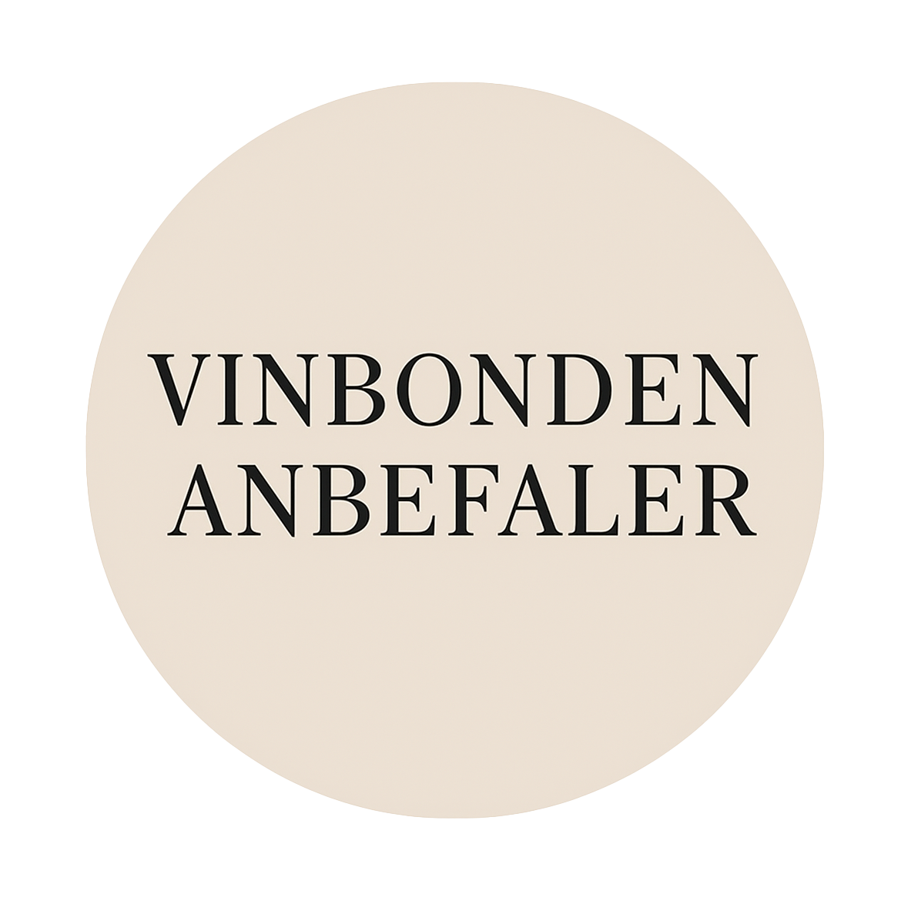

Havblik Hvidvin
Vores hvidvin


 Solaris reserve 2022
Solaris reserve 2022
En fyldig og frugtrig hvidvin
med noter af citrus og grønne æbler. Perfekt til fiskeretter og lette salater.

Solaris reserve 2023
En balanceret og aromatisk årgang med mere dybde og struktur.
Moden frugt, mineralske toner og en blød eftersmag giver en elegant vin, der passer godt til fisk og skaldyr.

Solaris reserve 2024
Ung og livlig med tydelig frugtprofil og florale noter.
Denne årgang byder på frisk pære, stikkelsbær og en let, saftig mundfornemmelse - perfekt til nye, nysgerrige ganer.
Vores Mousserende vin

Dessertvin 2022
En livlig og tør mousserende vin
med fine bobler og noter af grønne æbler og lime. En frisk og sprød oplevelse, ideel som velkomst eller til østers og skaldyr.

Dessertvin 2023
Elegant og balanceret
med cremet mousse og smag af pære, hvid fersken og et strejf af brioche. Denne årgang byder på dybde og finesse – perfekt til lette forretter.

Dessertvin 2024
Ung, aromatisk og sprudlende.
Noter af citrusblomst og stikkelsbær kombineret med en forfriskende syre gør denne vin oplagt til sommerlige anledninger og tapas.